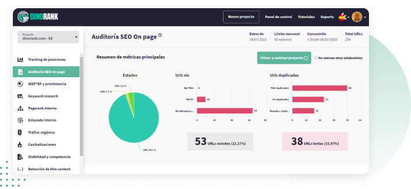

Si eres consultor SEO, tienes un blog, un ecommerce o trabajas tus propios nichos y quieres mejorar tus ingresos, tienes que conseguir que tu proyecto web atraiga tráfico orgánico y escale puestos en los resultados de Google, para mejorar la conversión. "); ?>
redirecciones 2XX, 3XX, 4XX y 5XX. "); ?>
title y metadescription duplicados o vacíos. "); ?>
no index, no follow... "); ?>
informes personalizados. "); ?>
-
Gráfico resumen con las métricas principales. "); ?>

-
Detalles de Auditoría SEO."); ?>

-
estado de todas las URLs de tu web. "); ?>
-
errores 200 (el estado de la URL es correcto), notificaciones 3XX (dicen si hay una redirección sobre esa URL; no tiene por qué ser negativo, pero lo mejor siempre es comprobar que está correcto); 4XX que indican que una página no se encuentra y eso puede afectar al posicionamiento y los 5XX son errores de servidor y es posible que tengas que contactar con tu proveedor de hosting. "); ?>
-
Titles. Son los títulos que aparecen en los resultados de búsqueda de Google y son distintos del H1. DinoRANK te dice si están duplicados o sin rellenar y aparecen todas las URLs para que las puedas comprobar. "); ?>
-
H1. Es el encabezado principal, el título del contenido. Indica si están duplicados o sin H1. "); ?>
-
Metadescription. Son los textos que aparecen en los resultados de búsqueda de Google. DinoRANK te dice cuales están duplicadas o no tienen metadescription. "); ?>
meta robots.
Hay tres opciones:
"); ?>
-
No index. Indican a Google que no indexe esa URL porque no interesa que aparezca en los resultados de búsqueda, por ejemplo, las páginas de política de privacidad, cookies, etc. "); ?>
-
No follow. Así se indica a los buscadores que no sigan un enlace, por ejemplo, si no deseas que Google siga un determinado enlace externo. "); ?>
-
Nosnippet. Los snippet que son el conjunto de title y la metadescription. Con esta opción se les dice a los buscadores que no muestren el snippet de una URL en los resultados de búsqueda. "); ?>
-
URLs lentas. DinoRANK indica todas las URLs que tardan más de 1 segundo en cargar. Afecta a la experiencia de usuario y Google lo penaliza. "); ?>
-
Inlinks. Ofrece un listado de todas las URLs de tu web junto con los enlaces internos que apuntan a cada una de ellas. "); ?>
-
Protocolo http vs https. DinoRANK comprueba si tu página web tiene o no protocolo seguro. "); ?>
-
URLs espejo. Son las URLS iguales, solo se diferencian en que terminan en barra (/) o sin ella. Google las interpreta como contenido duplicado y lo penaliza. "); ?>
Informe profesional en PDF para que se lo puedas entregar a tu cliente con los problemas que tiene su web y las soluciones que planteas a cada uno de ellos. "); ?>